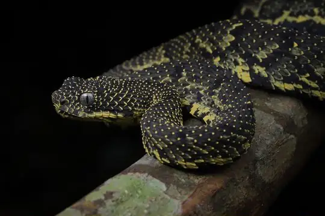
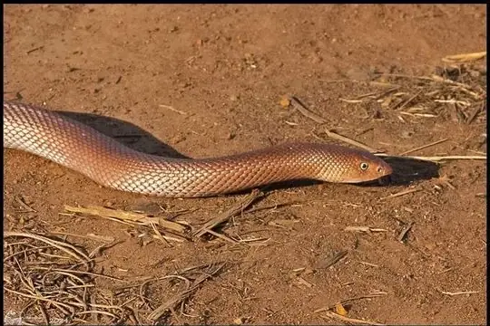
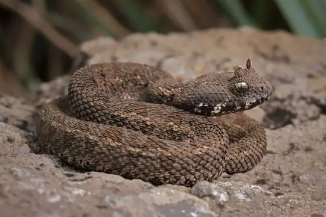
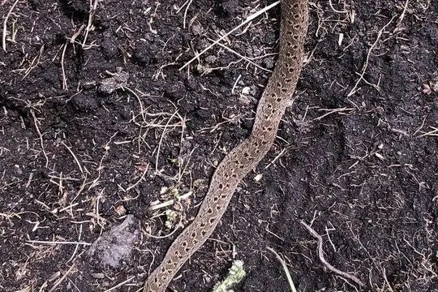
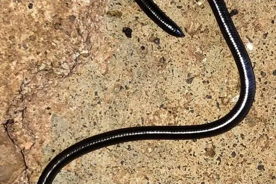
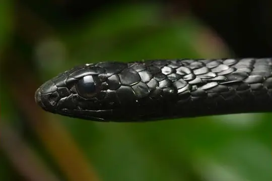

Snakes of Kenya
148 snake species are recorded in Kenya in SnakeList: 55 venomous and 93 non-venomous, from 12 families.
- 148species
- 55venomous
- 93non-venomous
- 12families
Species
Showing 148 species
 African Bush ViperAtheris squamigera
African Bush ViperAtheris squamigera African CobraNaja pallida
African CobraNaja pallida African Garter SnakeElapsoidea sundevallii
African Garter SnakeElapsoidea sundevallii African Hairy Bush ViperAtheris hispida
African Hairy Bush ViperAtheris hispida African Rock PythonPython sebae
African Rock PythonPython sebae African Shovel-nosed SnakeScaphiophis albopunctatus
African Shovel-nosed SnakeScaphiophis albopunctatus African Tree CobraPseudohaje goldii
African Tree CobraPseudohaje goldii Angola blind snakeAfrotyphlops angolensis
Angola blind snakeAfrotyphlops angolensis Angolan Shovel-snoutProsymna ambigua
Angolan Shovel-snoutProsymna ambigua
Ashe's Bush ViperAtheris desaixi Ashe's Spitting CobraNaja ashei
Ashe's Spitting CobraNaja ashei Battersby's Green SnakePhilothamnus battersbyi
Battersby's Green SnakePhilothamnus battersbyi Beautiful Sand SnakePsammophis pulcher
Beautiful Sand SnakePsammophis pulcher Bibron's Burrowing AspAtractaspis bibronii
Bibron's Burrowing AspAtractaspis bibronii Black Centipede EaterAparallactus guentheri
Black Centipede EaterAparallactus guentheri Black File SnakeGracililima nyassae
Black File SnakeGracililima nyassae Black Garter SnakeElapsoidea nigra
Black Garter SnakeElapsoidea nigra Black MambaDendroaspis polylepis
Black MambaDendroaspis polylepis Black-headed MicrelapsMicrelaps vaillanti
Black-headed MicrelapsMicrelaps vaillanti- No photo yetBlack-headed Smooth SnakeMeizodon plumbiceps
 Black-lined Green SnakeHapsidophrys lineatus
Black-lined Green SnakeHapsidophrys lineatus Black-necked Spitting CobraNaja nigricollis
Black-necked Spitting CobraNaja nigricollis- No photo yetBlack-tip Worm SnakeLeptotyphlops nigroterminus
 BoomslangDispholidus typus
BoomslangDispholidus typus Brown Forest CobraNaja subfulva
Brown Forest CobraNaja subfulva Brown House Snake (capensis)Boaedon capensis
Brown House Snake (capensis)Boaedon capensis Brown House Snake (fuliginosus)Boaedon fuliginosus
Brown House Snake (fuliginosus)Boaedon fuliginosus- No photo yetButler's Two-headed SnakeChilorhinophis butleri
 Calabresi's Blind-snakeAfrotyphlops calabresii
Calabresi's Blind-snakeAfrotyphlops calabresii Cape Wolf Snake (capense)Lycophidion capense
Cape Wolf Snake (capense)Lycophidion capense- No photo yetCentral-African Lined House SnakeBoaedon paralineatus
 Common Egg EaterDasypeltis scabra
Common Egg EaterDasypeltis scabra Common File SnakeLimaformosa capensis
Common File SnakeLimaformosa capensis Common Night AdderCausus rhombeatus
Common Night AdderCausus rhombeatus Common Purple-glossed SnakeAmblyodipsas polylepis
Common Purple-glossed SnakeAmblyodipsas polylepis Common Slug EaterDuberria lutrix
Common Slug EaterDuberria lutrix Confusing Egg EaterDasypeltis confusa
Confusing Egg EaterDasypeltis confusa Congo File SnakeLimaformosa savorgnani
Congo File SnakeLimaformosa savorgnani- No photo yetDrewes' Worm SnakeEpacrophis drewesi
 Dull Purple-glossed SnakeAmblyodipsas unicolor
Dull Purple-glossed SnakeAmblyodipsas unicolor East African Egg EaterDasypeltis medici
East African Egg EaterDasypeltis medici East African Shovel-snoutProsymna stuhlmanni
East African Shovel-snoutProsymna stuhlmanni Eastern Crowned Smooth SnakeMeizodon regularis
Eastern Crowned Smooth SnakeMeizodon regularis- No photo yetEastern Snake-eaterPolemon christyi
 Eastern Stripe-bellied Sand SnakePsammophis orientalis
Eastern Stripe-bellied Sand SnakePsammophis orientalis Eastern Vine SnakeThelotornis mossambicanus
Eastern Vine SnakeThelotornis mossambicanus Egyptian CatsnakeTelescopus obtusus
Egyptian CatsnakeTelescopus obtusus Egyptian CobraNaja haje
Egyptian CobraNaja haje Egyptian Saw-scaled ViperEchis pyramidum
Egyptian Saw-scaled ViperEchis pyramidum Emerald Green SnakePhilothamnus heterodermus
Emerald Green SnakePhilothamnus heterodermus Emin Pasha's Worm SnakeLeptotyphlops emini
Emin Pasha's Worm SnakeLeptotyphlops emini- No photo yetEngdahl's Mole ViperAtractaspis engdahli

Ethiopian Hook-nosed SnakeScaphiophis raffreyi Fierce Night StalkerToxicodryas vexator
Fierce Night StalkerToxicodryas vexator Flat-snouted Wolf SnakeLycophidion depressirostre
Flat-snouted Wolf SnakeLycophidion depressirostre Flowered RacerPlatyceps florulentus
Flowered RacerPlatyceps florulentus Forest CobraNaja melanoleuca
Forest CobraNaja melanoleuca Forest Night AdderCausus lichtensteinii
Forest Night AdderCausus lichtensteinii Frade’s Brown House SnakeBoaedon fradei
Frade’s Brown House SnakeBoaedon fradei Gaboon ViperBitis gabonica
Gaboon ViperBitis gabonica Goggle-eyed Worm SnakeLeptotyphlops macrops
Goggle-eyed Worm SnakeLeptotyphlops macrops Green MambaDendroaspis angusticeps
Green MambaDendroaspis angusticeps Green Night AdderCausus resimus
Green Night AdderCausus resimus Green Water SnakePhilothamnus hoplogaster
Green Water SnakePhilothamnus hoplogaster Grey-bellied Grass SnakePsammophylax variabilis
Grey-bellied Grass SnakePsammophylax variabilis Irregular Green SnakePhilothamnus irregularis
Irregular Green SnakePhilothamnus irregularis Jackson's Black Tree SnakeThrasops jacksonii
Jackson's Black Tree SnakeThrasops jacksonii Jackson's Centipede-eaterAparallactus jacksonii
Jackson's Centipede-eaterAparallactus jacksonii Jameson's MambaDendroaspis jamesoni
Jameson's MambaDendroaspis jamesoni- No photo yetKakamega Blind-snakeAfrotyphlops kaimosae
 Kenya Beaked SnakeRhinotyphlops unitaeniatus
Kenya Beaked SnakeRhinotyphlops unitaeniatus
Kenya Horned ViperBitis worthingtoni
Kenya Montane ViperMontatheris hindii Kenya Two-headed SnakeMicrelaps bicoloratus
Kenya Two-headed SnakeMicrelaps bicoloratus- No photo yetKenyan Dwarf Blind-snakeAfrotyphlops nanus
 Kenyan striped skaapstekerPsammophylax multisquamis
Kenyan striped skaapstekerPsammophylax multisquamis Kirtland's Twig SnakeThelotornis kirtlandii
Kirtland's Twig SnakeThelotornis kirtlandii- No photo yetLamu Worm SnakeEpacrophis boulengeri
 Large-eyed Green TreesnakeRhamnophis aethiopissa
Large-eyed Green TreesnakeRhamnophis aethiopissa Lesser African PythonPython natalensis
Lesser African PythonPython natalensis Lined Olympic SnakePsammophis lineatus
Lined Olympic SnakePsammophis lineatus Lineolate Blind SnakeAfrotyphlops lineolatus
Lineolate Blind SnakeAfrotyphlops lineolatus Link-marked Sand SnakePsammophis biseriatus
Link-marked Sand SnakePsammophis biseriatus Long-tailed Thread SnakeMyriopholis longicauda
Long-tailed Thread SnakeMyriopholis longicauda Loveridge's Garter SnakeElapsoidea loveridgei
Loveridge's Garter SnakeElapsoidea loveridgei- No photo yetMalindi Centipede-eaterAparallactus turneri
- No photo yetMbeere gracile blind snakeLetheobia mbeerensis

Merker's Thread SnakeLeptotyphlops merkeri Montane Egg-eaterDasypeltis atra
Montane Egg-eaterDasypeltis atra Mopane SnakeHemirhagerrhis nototaenia
Mopane SnakeHemirhagerrhis nototaenia- No photo yetMount Kenya Worm SnakeLeptotyphlops keniensis
 Northern Bark SnakeHemirhagerrhis hildebrandtii
Northern Bark SnakeHemirhagerrhis hildebrandtii Northern Marbled Nocturnal Tree SnakeDipsadoboa flavida
Northern Marbled Nocturnal Tree SnakeDipsadoboa flavida Olive Grass RacerPsammophis phillipsii
Olive Grass RacerPsammophis phillipsii Olive Marsh SnakeNatriciteres olivacea
Olive Marsh SnakeNatriciteres olivacea Olive Whip SnakePsammophis mossambicus
Olive Whip SnakePsammophis mossambicus Ornate Wolf SnakeLycophidion ornatum
Ornate Wolf SnakeLycophidion ornatum Parker's Worm SnakeMyriopholis parkeri
Parker's Worm SnakeMyriopholis parkeri Peri-Forest House SnakeBoaedon perisilvestris
Peri-Forest House SnakeBoaedon perisilvestris Peter's Thread SnakeLeptotyphlops scutifrons
Peter's Thread SnakeLeptotyphlops scutifrons Peters' Burrowing AspAtractaspis fallax
Peters' Burrowing AspAtractaspis fallax Plumbeous Centipede EaterAparallactus lunulatus
Plumbeous Centipede EaterAparallactus lunulatus Puff AdderBitis arietans
Puff AdderBitis arietans Red Beaked SnakeRhamphiophis rubropunctatus
Red Beaked SnakeRhamphiophis rubropunctatus Red-lipped SnakeCrotaphopeltis hotamboeia
Red-lipped SnakeCrotaphopeltis hotamboeia Rhinoceros Viper (nasicornis)Bitis nasicornis
Rhinoceros Viper (nasicornis)Bitis nasicornis Rufous Beaked SnakeRhamphiophis rostratus
Rufous Beaked SnakeRhamphiophis rostratus Ruspoli's Shovelsnout SnakeProsymna ruspolii
Ruspoli's Shovelsnout SnakeProsymna ruspolii Sand BoaEryx colubrinus
Sand BoaEryx colubrinus Schlegel's Giant Blind SnakeAfrotyphlops schlegelii
Schlegel's Giant Blind SnakeAfrotyphlops schlegelii
Schmidt's Bold-eyed Tree SnakeThrasops schmidti- No photo yetScortecci's Blind SnakeMyriopholis braccianii
 Semiornate Smooth SnakeMeizodon semiornatus
Semiornate Smooth SnakeMeizodon semiornatus Short RacerPlatyceps brevis
Short RacerPlatyceps brevis Slender Green SnakePhilothamnus heterolepidotus
Slender Green SnakePhilothamnus heterolepidotus- No photo yetSmall-Scaled Burrowing AspAtractaspis microlepidota
 Smith's African Water SnakeGrayia smithii
Smith's African Water SnakeGrayia smithii Snouted Night AdderCausus defilippii
Snouted Night AdderCausus defilippii- No photo yetSomali Blind-snakeRhinotyphlops ataeniatus
- No photo yetSomali Giant Blind-snakeAfrotyphlops brevis
 Speckled Sand RacerPsammophis punctulatus
Speckled Sand RacerPsammophis punctulatus Speckled Wolf SnakeLycophidion meleagre
Speckled Wolf SnakeLycophidion meleagre Spotted Blind SnakeAfrotyphlops punctatus
Spotted Blind SnakeAfrotyphlops punctatus Spotted Bush SnakePhilothamnus semivariegatus
Spotted Bush SnakePhilothamnus semivariegatus Spotted Green SnakePhilothamnus punctatus
Spotted Green SnakePhilothamnus punctatus Striped Bark SnakeHemirhagerrhis kelleri
Striped Bark SnakeHemirhagerrhis kelleri Striped Sand SnakePsammophis sibilans
Striped Sand SnakePsammophis sibilans Striped SkaapstekerPsammophylax tritaeniatus
Striped SkaapstekerPsammophylax tritaeniatus Swahili Gracile Blind-snakeLetheobia swahilica
Swahili Gracile Blind-snakeLetheobia swahilica- No photo yetTana Delta Smooth SnakeMeizodon krameri
- No photo yetTana Herald SnakeCrotaphopeltis braestrupi
- No photo yetTana worm snakeMyriopholis tanae
 Tanganyika Sand SnakePsammophis tanganicus
Tanganyika Sand SnakePsammophis tanganicus- No photo yetTeitana Purple-glossed SnakeAmblyodipsas teitana
 Thirteen-scaled Green SnakePhilothamnus carinatus
Thirteen-scaled Green SnakePhilothamnus carinatus Tholloni's African Water SnakeGrayia tholloni
Tholloni's African Water SnakeGrayia tholloni Tiger Cat SnakeTelescopus semiannulatus
Tiger Cat SnakeTelescopus semiannulatus Tornier's Cat SnakeCrotaphopeltis tornieri
Tornier's Cat SnakeCrotaphopeltis tornieri Unicolor File SnakeLimaformosa chanleri
Unicolor File SnakeLimaformosa chanleri Usambara Vine SnakeThelotornis usambaricus
Usambara Vine SnakeThelotornis usambaricus Variable Burrowing AspAtractaspis irregularis
Variable Burrowing AspAtractaspis irregularis Western Beaked SnakeRhamphiophis oxyrhynchus
Western Beaked SnakeRhamphiophis oxyrhynchus Western Jackson’s Wolf SnakeLycophidion jacksoni
Western Jackson’s Wolf SnakeLycophidion jacksoni- No photo yetWormlike Beaked SnakeLetheobia lumbriciformis
 Yellow-flanked SnakeCrotaphopeltis degeni
Yellow-flanked SnakeCrotaphopeltis degeni- No photo yetZanzibar Beaked SnakeLetheobia pallida
 Boaedon mendesi
Boaedon mendesi- No photo yetLeptotyphlops tanae
No snakes in Kenya match.
Kenya’s snakes in numbers
- Families: Colubridae 39, Psammophiidae 18, Atractaspididae 16, Lamprophiidae 15, Typhlopidae 14, Elapidae 13, Leptotyphlopidae 13, Viperidae 13, Prosymnidae 3, Pythonidae 2, Boidae 1, Pseudoxyrhophiidae 1.
- 14 are recorded in no other country in SnakeList: Ashe's Bush Viper, Drewes' Worm Snake, Kakamega Blind-snake, Kenya Horned Viper, Kenya Montane Viper, Kenyan Dwarf Blind-snake, Lamu Worm Snake, Malindi Centipede-eater, Mbeere gracile blind snake, Mount Kenya Worm Snake, Schmidt's Bold-eyed Tree Snake, Tana Delta Smooth Snake and 2 more.